Case Study 02 – Information Design
A double-page infographic and animated social campaign about food insecurity in the UK, turning official data into something a young audience can read at a glance.
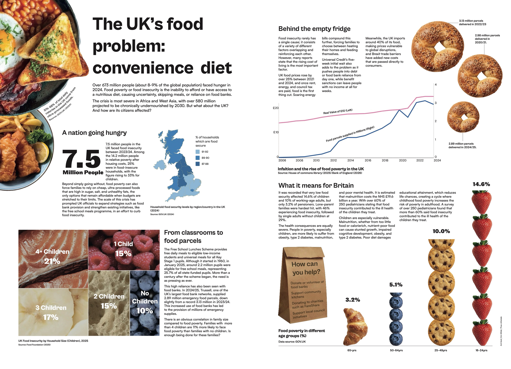
Working in a group of three, we researched a social issue and turned the data into an infographic spread and a short animation. We chose food insecurity in the UK: 7.5 million people faced it in 2023/24, and food banks handed out nearly 3 million emergency parcels a year.
We aimed it at young adults aged 18–35 who are aware of social issues but may not understand food insecurity as a wider problem, so the tone is direct and the charts are kept accessible.
Inspired by Otto Neurath's Isotype charts and Nicholas Felton's annual reports, I tested different ways of turning raw data into graphics, from Illustrator and Excel to online tools like Datawrapper and RAWGraphs. The online tools were the most accurate, but for one chart I couldn't find a tool that did what I wanted, so I made it by hand in InDesign, stacking my own food illustrations into a bar chart.
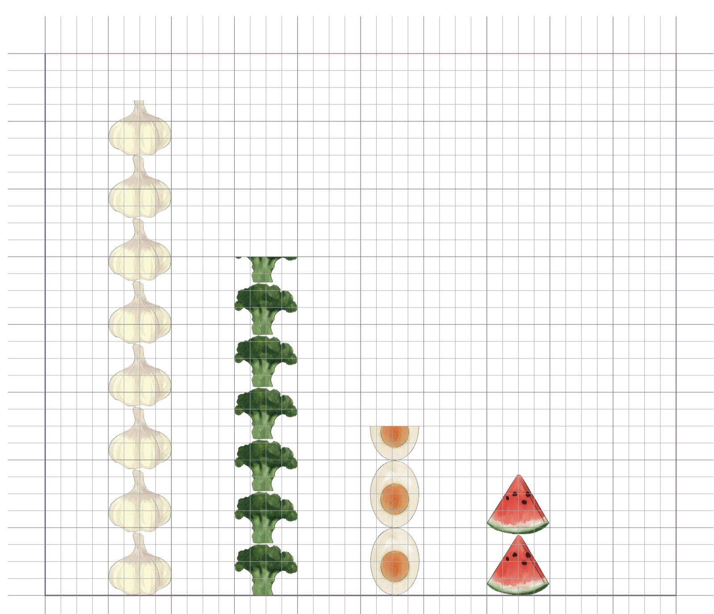
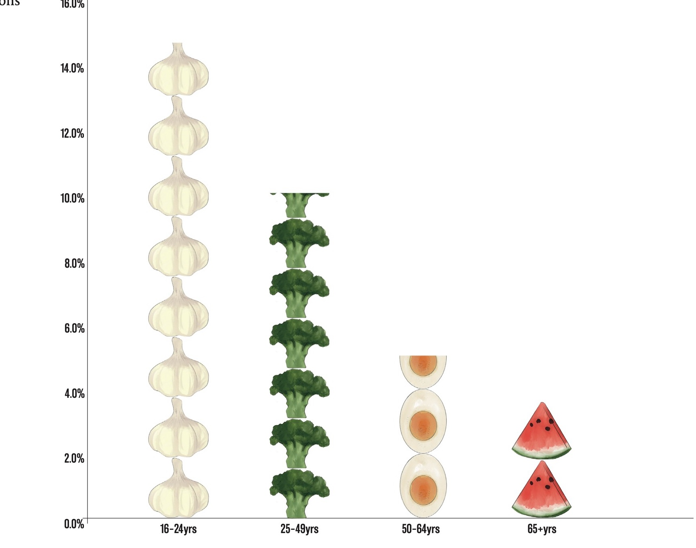
I sketched layout options for the spread, working out where the title sits, how the charts group together and how the eye moves across both pages: from what food insecurity is, to the global picture, then the UK, then what can be done. My mid-fidelity concept used a four-by-five grid with a world map as the main graphic.
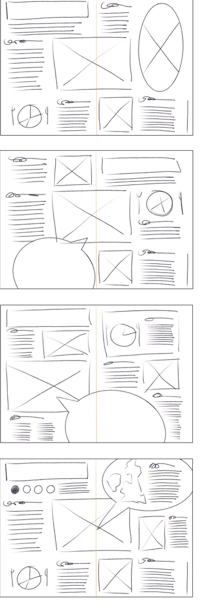
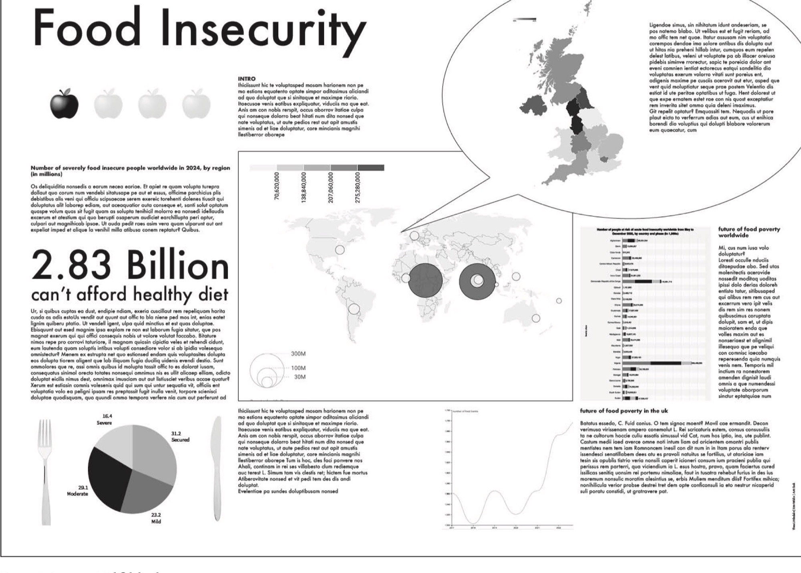
Feedback from our pitch showed the world map didn't work as the main graphic and some layouts were too text-heavy. As a group we planned the changes in Figma and Trello, printed every version to check sizes on paper, and swapped in recognisably British food photography. Across seven versions we refined the hierarchy, spacing, grid and colour until the spread read clearly from top left to bottom right.
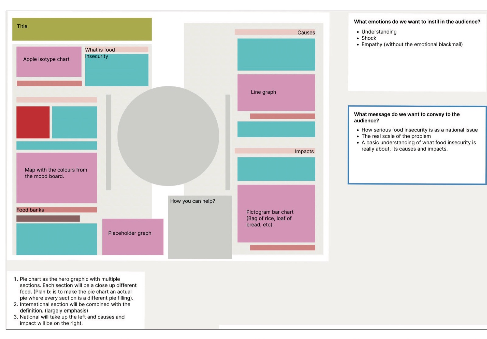
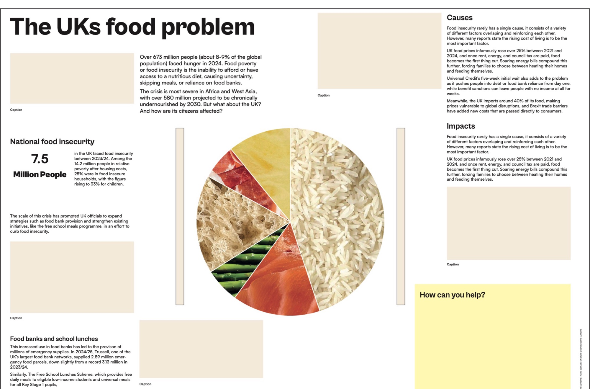
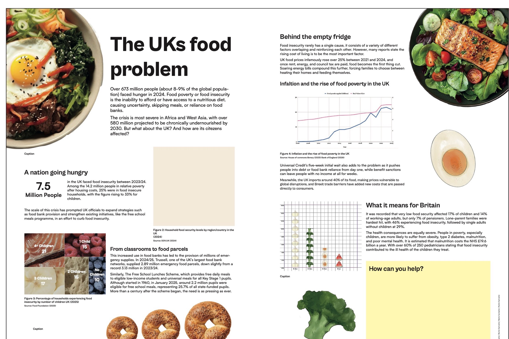
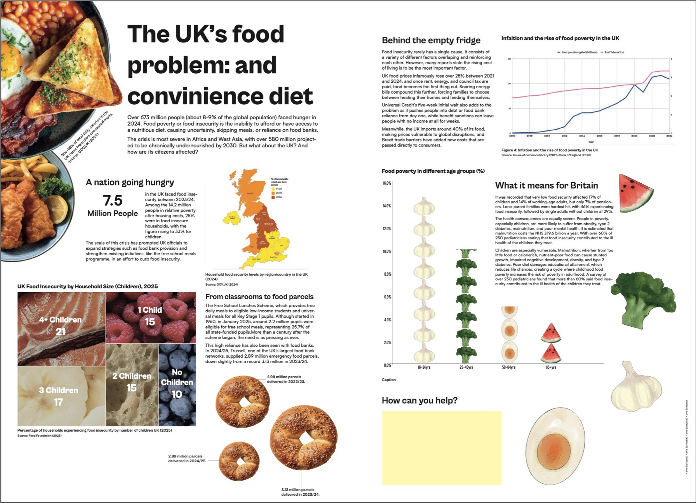
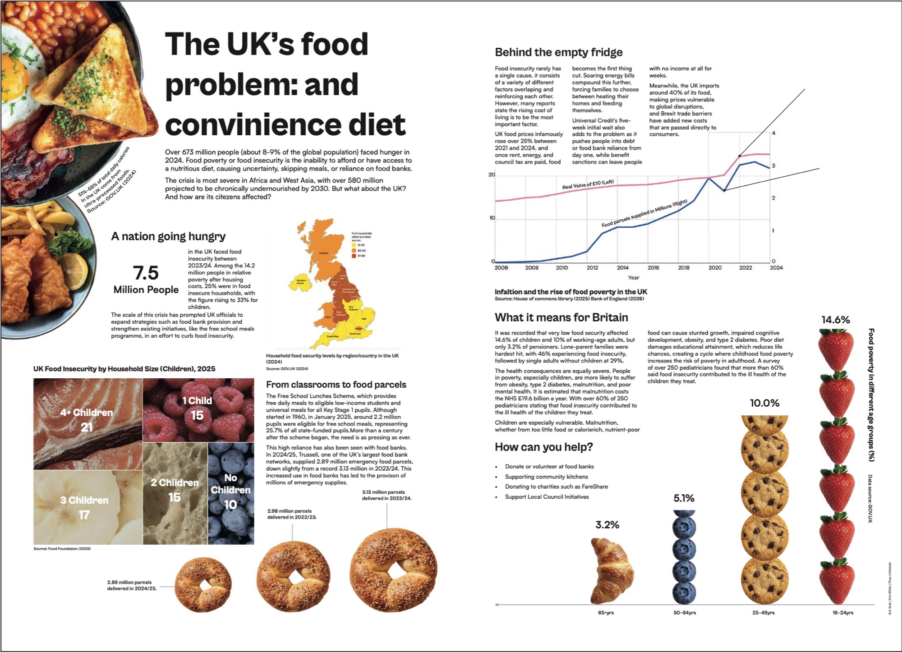
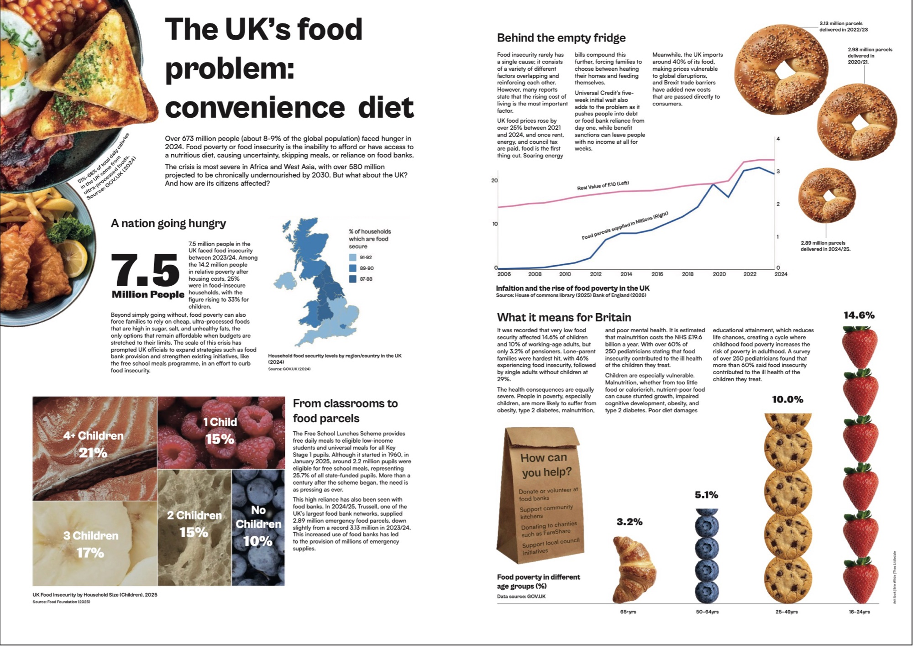
We each animated a section of a shared storyboard, using the same fonts, colours and imagery as the infographic so they work as one campaign. Mine focuses on the UK: school meals, food bank parcels and household size. It was my first time using After Effects. I used a crumpled paper background and a turbulent displace effect to give it a collage feel that matches the infographic.
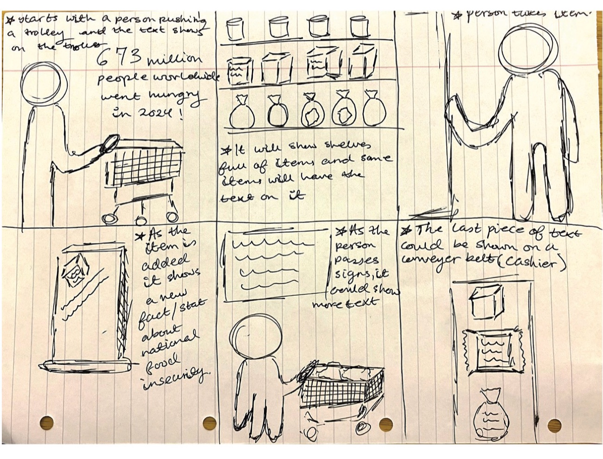
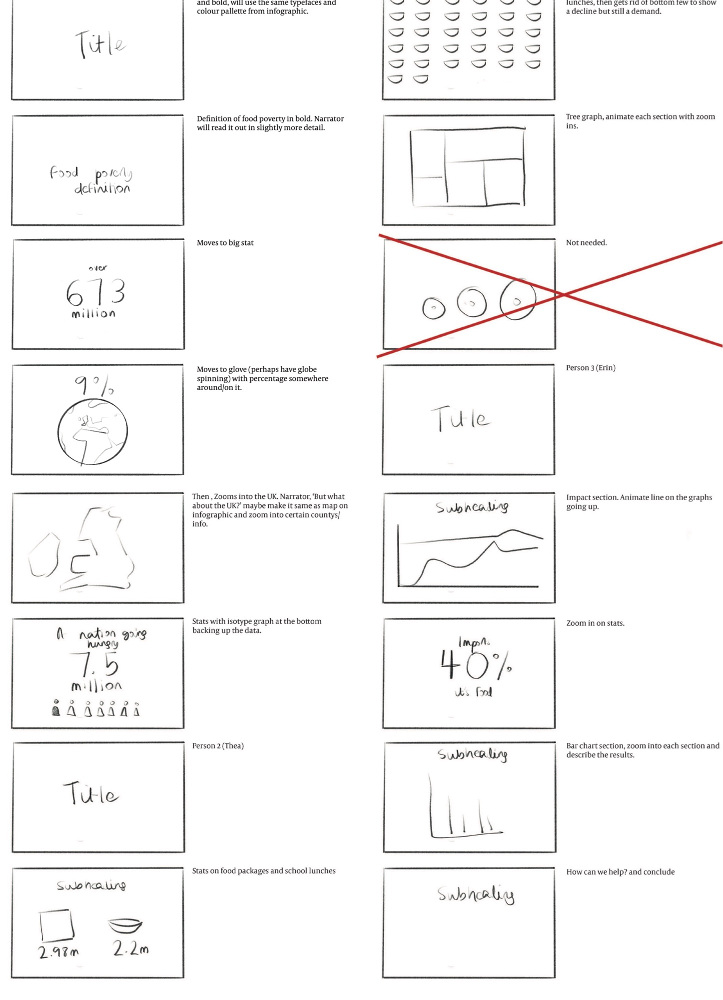
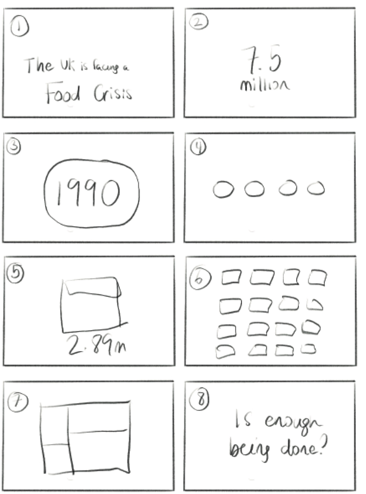
Our first concepts were too similar because we'd each worked alone, so after the pitch we planned together much more closely, which made the final piece far stronger. Learning After Effects, from keyframing to layer effects, is one of my biggest takeaways, and something I'll keep using in motion and campaign work.
Group project by Arit Ibok, Erin Wilde and Thea Littledale. Data from the Food Foundation, GOV.UK, the House of Commons Library, the Bank of England and Trussell.
Get in touch